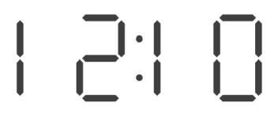
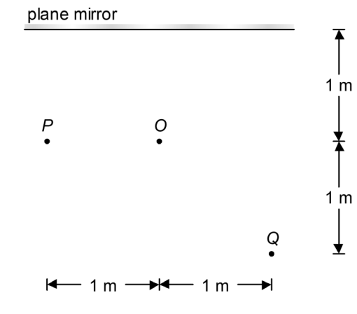
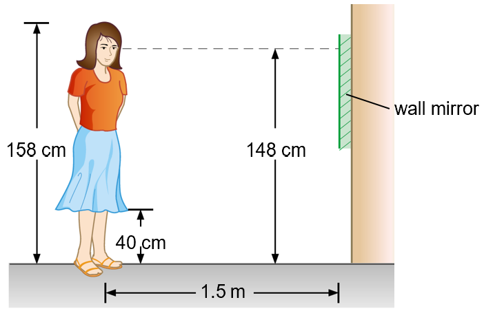
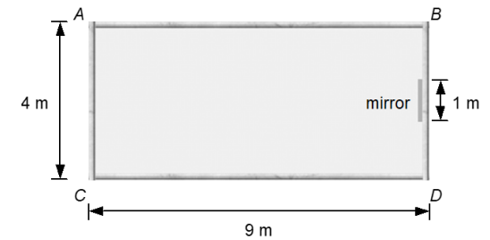

S3 Physics · 4 multiple-choice items

The figure above shows the image of a digital clock face formed by a plane mirror. What is the time shown by the clock?
Three dancers O, P and Q stand in front of a plane mirror as shown. What is the minimum width of the mirror for dancer O to see both dancers P and Q?


A 158-cm-tall girl stands 1.5 m from a wall mirror as shown below. Her eyes are 148 cm above the floor. The girl can just see the bottom of her skirt, which is 40 cm above the floor, in the mirror. What is the height of the bottom edge of the mirror above the floor?
In a room ABCD, a tall plane mirror of width 1 m is placed at the middle of the wall BD. The top view of the room is shown below. A student facing the mirror wants to see the objects placed at corners A and C at the same time. At most how far can he stand away from the mirror?

Teacher page · 4 items
Answer: D. 01:51
Guide: A plane mirror reverses left and right. Reverse the digit order and flip each 7-segment digit (2 looks like 5, and 5 looks like 2). The image 12:10 therefore corresponds to 01:51.
Answer: B. 0.833 m
Guide: Draw the images of P and Q behind the mirror. The rays from those images to O meet the mirror at two points. The distance between those points is 5/6 m = 0.833 m, which is the shortest mirror that lets O see both P and Q.
Answer: D. 94 cm
Guide: The ray from the hem of the skirt to her eyes meets the bottom of the mirror. That point is midway in height between the eyes (148 cm) and the hem (40 cm): (148 + 40) / 2 = 94 cm.
Answer: B. 3 m
Guide: Draw the images of A and C behind the mirror. The furthest point from which both images can be seen is on the centre line, with the two rays just grazing the ends of the 1 m mirror. Similar triangles then give a maximum distance of 3 m from the mirror.